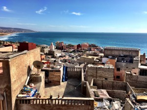
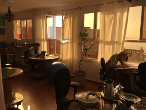
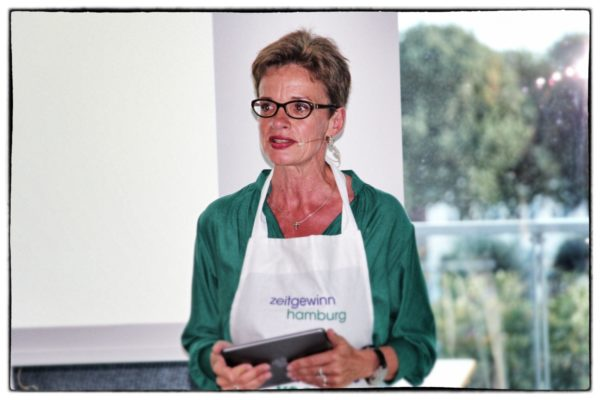
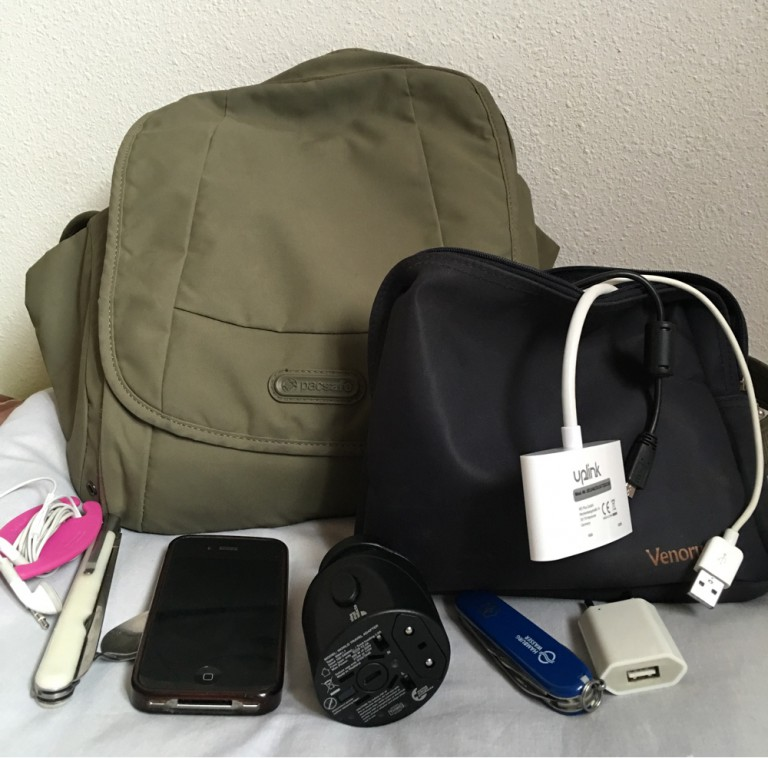

CoWorking am Meer
Von Marrakesch bin ich mit dem Bus sehr entspannt, klimatisiert und für nur 10 Euro in drei Stunden nach Agadir gefahren. Magda vom Sun-Desk hatte einen Taxifahrer organisiert, der mich vom Busbahnhof mach Taghazout gebracht hat. Ich wollte endlich CoWorking am Meer ausprobieren.
Sun-Desk -CoWorking Space in Taghazout

Blick aus dem Büro vom Sun-Desk
Abholung und Fahrt haben, wie bisher alles, super geklappt. Ich hatte zwar schon einiges über Nordafrika und Marokko gelesen und gesehen, aber auf diese Menge halbfertige Gebäude und nackten Beton war ich dann im ersten Moment doch nicht gefasst. Hotelanlagen, Wohnhäuser, Ortschaften, überall angefangene und nie zu Ende gestellte Gebäude. Sieht ehrlich gesagt nicht so einladend aus. Aber spätestens als ich das Meer aus der Ferne gesehen habe, war ich versöhnt. Und überhaupt gewöhnt man sich schnell an diesen Anblick. Auch wenn ich aus meinem Zimmerfenster schaue, sehe ich vor mir direkt nur Bauplatz, aber eben auch die Sonne und zwei Treppen rauf gibt es eine Terasse auf dem Haus, die sehr nett eingerichtet ist und einen Blick über den Ort hinweg zum Meer hat. Zugegeben, irgendwie hatte ich zuerst auch gedacht, dass der Sun-Desk direkt am Wasser liegt. Daher war ich im ersten Moment etwas enttäuscht. Aber Magda und ihre Mitarbeiterinnen sind so nett und hilfsbereit bei allem, dass ich auch das schnell wegstecken konnte. Ich habe ein großes Zimmer, einfach eingerichtet, in einem der Nachbarhäuser vom Sun-Desk Haus. Im Haus sind mehrere Zimmer und zwei kleine Bäder, eine Küche sowie die sonnige Terrasse. Und ich muss sagen, schon nach wenigen Tagen sind mir der Ort und die Leute hier irgendwie ans Herz gewachsen.
Super ist, dass es jeden Tag um 9.00 Uhr Frühstück gibt, ein tolles Frühstück, eine einheimische Mitarbeitern kocht, Omlett, Obstsalat, Guacamole…. jeden Morgen, jedenfalls wenn man nur kurz da ist, gibt es etwas anderes. Einfach schön. Ansonsten kann man im Ort gut Obst und Gemüse einkaufen und es gibt in beiden Häusern Kochmöglichkeiten. Aber es gibt auch zahlreichen Restaurants und Imbisse in unterschiedlicher Qualität, aber durchweg sehr günstig. Und ich muss erwähnen, dass die Nacht mit Frühstück und Büronutzung hier im Sun-Desk 22-30 Euro kostet. Da kann man eigentlich nichts verkehrt machen. Auch hier im Ort zu leben ist wirklich günstig.
Wieder wichtig fürs Arbeiten: WLAN und ein Büro. Beides ist vorhanden und funktioniert super gut. Es gibt sogar einen Skyperaum, der über einen Google-Kalender verwaltet wird. Momentan ist letzterer nicht sehr gebucht, so dass ich völlig unkompliziert meine bereits vorher abgemachten Skypetermine mit deutschen und kanadischen Kunden durchführen konnte. Allerdings gibt es derzeit mit Skype etwas Probleme, da das seitens der marokkanischen Regierung eingeschränkt wurde, aber mit WhatsApp-Anrufen oder GoogleHangout kann man dennoch gut und kostenfrei kommunizieren.
Und wie geht es tatsächlich mit dem Arbeiten?
Für mich sehr gut. Ich bin morgens vor dem Frühstück im Büro und erledige alles, wofür ich Internet benötige. Und um dieses Zeit ist das kleine Büro auch noch ganz leer. Nach dem Frühstück gehe ich auf „meine“ Terrasse und schreibe viel. Da ich eine Sonnenanbeterin bin, macht es mir nix aus, in der Sonne zu sitzen. Im Gegenteil ich fühle mich richtig wohl und habe das, was ich haben wollte: Sonne, Blick aus Meer sowie Zeit und Muße zu arbeiten. Für mich bedeutet das hauptsächlich Schreiben. Aber, es war Monatsende und ich habe auch super meine papierlose Buchhaltung erledigen können. Das heißt, alle elektronischen Belege abgeholt und mit Unternehmen Online zur Datev hochgeladen.
Dafür, dass es mir so leicht fällt zu arbeiten gibt es mehrere Gründe:
- der ist Ort relativ klein ist, auch nicht besonders schön und man hat relativ schnell alles erkundet
- wenn die Sonne jeden Tag da ist, habe ich nicht das Gefühl, bei Sonne unbedingt raus zu müssen, weil ich ein Stündchen schönes Wetter verpassen könnte
- alle anderen hier sind auch sehr fleißig und das ist motivierend
- mein Aufenthalt hier auch steuerlich betrachtet ein Arbeitsaufenthalt ist
Außerdem kann ich feststellen, dass ich mich ohne eigenen Wohnung rundherum, wo es ja immer was zu erledigen gibt, auch nicht so sehr selbst ablenke. Einfache Bürotätigkeiten, wie E-Mails beantworten, Rechnungen schreiben, Termine vereinbaren… erledigen sich wie von selbst, Themen die mir wichtig sind, aber mir nicht so leicht fallen, wie zum Beispiel Blogtexte schreiben, bearbeite ich mit der Pomodorotechnik. Ich kann jetzt schon sagen, dass ich bis heute, an Tag vier, mehr geschafft habe, als ich mir vorgenommen hatte. Mein Plan war, jeden Tag eine größere Sache erledigen. Es war ein ganz neues Gefühl, gestern abend mit den anderen auf der Sun-Desk Terrasse zu sitzen und nicht wirklich was zu tun zu haben, weil ich meinen eigenen Plan schon übererfüllt hatte. Das gelingt mir zu Hause selten. Vielleicht hat das damit zu tun, dass ich mir die Ziele zu Hause zu hochstecke. Das werde ich noch mal überprüfen.

Büro im Sun-Desk
Auch war ich am Anfang etwas unsicher, da ich dachte/wusste, dass ich die Älteste hier bin und keine reine digitale Nomadin bin. Aber reine digitale Nomaden, die nur herumreisen, keinen Wohnsitz mehr haben, da gab es hier nur einen CoWorker aus Island. Die CoWorker um mich herum sind im Schnitt zwischen Mitte 20 und 30 Jahre, alle digital natürlich fit. Einige sind selbständig andere tatsächlich fest oder in Teilzeit angestellt, aber bei Arbeitgebern denen es egal ist, von wo die Arbeit erledigt wird. Beruflich vertreten sind Softwareentwickler, Übersetzer, Webdesigner, IT-Consultants und ich :-). Aber klar, alle arbeiten hauptsächlich digital.
Aber ich wollt ja nicht nur arbeiten, sondern wusste, dass Taghazout ein Surfer-Paradies (Wellenreiten) ist und hatte die Befürchtung, dass ich die einzige Nichtsurferin bin. Aber das Gegenteil ist der Fall. Alle hier, jedenfalls im Moment sind eher Nichtsurfer und arbeiten mehr. Nichts desto trotz hatte ich für gestern meine erste Verabredung für einen halben Tag Surfen lernen. Ich dachte zuerst, ich würde jeden Tag üben, aber die Tage davor war es mir noch zu kalt. Und es hat großen Spaß gemacht. Ich war natürlich mehr im Wasser als auf dem Board, aber ein Pause mit Wasser und Sonne macht das CoWorking am Meer erst richtig perfekt. Und ich hätte es nicht fertig gebracht, das Surfer Paradies wieder zu verlassen ohne es nicht wenigstens versucht zu haben.
Auch wenn Taghazout klein ist, kann man doch neben CoWorking am Meer Einiges unternehmen. Im DFrost gibt es morgens und abends auf der Dachterasse Yoga, bei auf- und untergehender Sonne. Einfach sehr schön und entspannend. Der Markt in Aourir am Mittwoch ist sehr schön und ein Ausflug in das Paradies Valley lohnt sich auch (außer am Wochenende, da sit es zu voll).
Zuerst dachte ich, ich würde von hier aus mal zwei Tage mit einer geführten Tour in die Wüste fahren, aber bei nur sechs Tagen wird mir das jetzt doch zu stressig.
Fazit CoWorking am Meer:
Für mich funktioniert Arbteiten auch ohne Kundentermine in der Sonne sehr gut. Sun-Desk ist ein sehr gut geeigneter Platz dafür. Man kann im Büro oder auf der Terrasse arbeiten, den ganzen Tag das Internet nutzen, Kaffee, Tee und Wasser sind inkludiert. Ich weiß jetzt schon, dass ich solche Aufenthalte in meiner künftigen Jahresplanung berücksichtigen werde und auch Taghazout wird wieder dabei sein.
Weitere Artikel

Gar nicht lean ist auch mal gut
Das schlanke, entschlackte, effiziente Büro ist meine Leidenschaft. Doch vor einiger Zeit habe ich erfahren, dass es manchmal gut ist, nicht lean zu sein, nicht auf die „schlanke Linie“ zu achten. Ich war eingeladen, einen …

Checkliste Reisen und Arbeiten
Immer wieder habe ich gemerkt, dass auf Reisen generell zu viel einpacke, dafür aber wichtige Kleinigkeiten, die das Leben wirklich leichter machen, gern mal vergesse. Da ich immer mehr Arbeiten und Reisen verbinde, kann das …